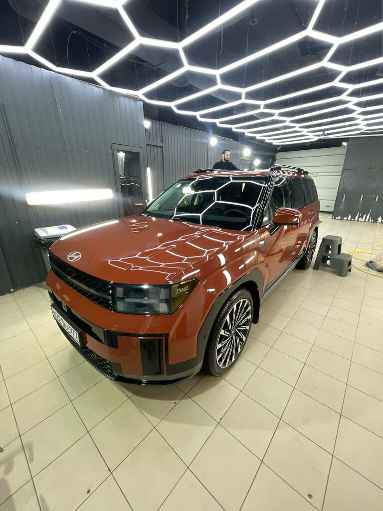

Детейлинг-мойка
Кузов, ковры и сушка. Уход, с которого начинается знакомство со студией.
1 500 ₽↗
От ежедневного ухода до полировки и защиты. Для тех, кто замечает разницу.
ХОРОШЕЕ МЕСТО — 2026Яндекс Карты · 5,0 / 68 оценокВыберите свой уровень ухода.
Состав и стоимость работ уточним для вашего автомобиля.
Кузов, ковры и сушка. Уход, с которого начинается знакомство со студией.
Комплекс в две фазы для регулярного ухода за автомобилем.
Обработка всех стёкол автомобиля гидрофобным составом.
Полировка кузова / Оклейка плёнкой / Химчистка салона / Защитные составы / Мойка мотоциклов
Цены из карточки Яндекс Карт. Итоговая стоимость зависит от согласованного состава работ.

Сдвиньте границу.
Посмотрите, как меняется отражение.
ИИ-иллюстрация эффекта полировки. Не является реальной работой Black Side.
Black Side — детейлинг-студия на Хавской. Место, где можно начать с мойки и подобрать более глубокий уход за автомобилем.
В перечне услуг — полировка кузова и стекла, химчистка салона, оклейка плёнкой и защитные составы. Работаем с внешним видом автомобиля и деталями, которые ощущаются каждый день.
«Мы всегда останемся вашими клиентами!»
Луиза отмечает результат химчистки и комплексной мойки, чистоту помещения и гостеприимную встречу.
«Результат выше всяких похвал»
Светлана рассказывает о быстрой записи, спокойном общении и подробных объяснениях сотрудников.
Избранные отзывы: короткие цитаты и пересказ впечатлений. Полные тексты доступны на Яндекс Картах.
Для регулярного ухода в карточке представлены детейлинг-мойка и комплексная мойка в две фазы. Если задача — восстановить внешний вид или защитить поверхности, обсудите со студией полировку, химчистку или оклейку.
В карточке услуга обозначена как «кузов + ковры + сушка», стоимость — 1 500 ₽. Дополнительные работы и цену для вашего автомобиля согласуйте при записи.
Да, в карточке указаны оклейка кузова плёнкой, нанесение защитных составов и антидождь на все стёкла. Материал, площадь обработки и условия ухода уточните у студии.
Время зависит от услуги и состояния автомобиля. Сообщите модель и желаемый результат по телефону — вам предложат время визита и уточнят длительность.
Конкретные сроки гарантии в доступной карточке не указаны. Перед работами уточните условия на выбранную услугу и материал.
Москва, Хавская улица, 3, корпус 1. От метро «Шаболовская» — около 880 метров. В карточке указана парковка; удобный въезд уточните по телефону.
Запись по номеру +7 925 022-27-72. В карточке указаны оплата картой, наличными и СБП.